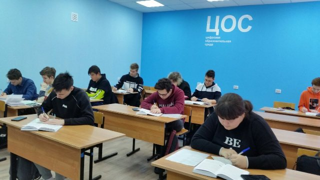

СПЕЦИАЛЬНОСТЬ "ИНФОРМАЦИОННЫЕ СИСТЕМЫ И ПРОГРАММИРОВАНИЕ"
Наша специальность абсолютно молода по сравнению с почтенным возрастом техникума.
Но у нас уже есть своя история, пусть небольшая, но своя. Специальность в своих изменениях
следует за тенденцией развития компьютерных технологий. Так, первая группа набиралась по
профессии "Оператор ЭВМ" и относилась к начальному профессиональному образованию. Через два года
на рынке труда стали востребованы специалисты более высокого класса и техникум объявил набор в техникумовскую
группу "Прикладная информатика". А теперь мы готовим специалистов информационных систем, программистов. Сейчас
наша специальность из ТОП -50. Вот такая она, наша маленькая история.

Наши студенты участники Конкурса профессионального мастерства и
Чемпионата "Профессионалы" по компетенции "ИТ-решения для бизнеса
на платформе 1С"